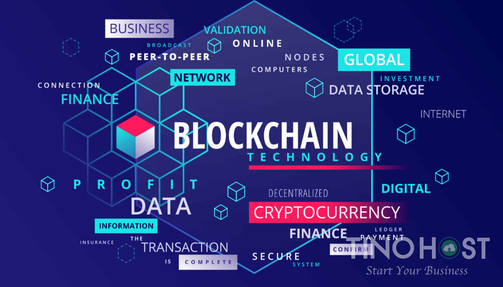

Blockchain and cryptocurrencies
Author: Le Anh Quan
What does it do?
A blockchain is a decentralized ledger of all transactions across a peer-to-peer network. Using this technology, participants can confirm transactions without needing a central clearing authority. Blockchain is the technology that enables the existence of cryptocurrency. Bitcoin is the name of the best-known cryptocurrency for which blockchain technology was invented. A cryptocurrency is a medium of exchange but is digital and uses encryption techniques to control the creation of monetary units and verify the transfer of funds. Thanks to its benefits and potential, Blockchain and cryptocurrency are starting to play a more critical role in society. The most well-known use of Blockchain is with cryptocurrencies such as Bitcoin, Bitcoin has earned its fame as the most famous cryptocurrency because it has cemented itself as a legitimate trading currency, and the value of Bitcoin is very high at around 55000 USD per Bitcoin. Other than Bitcoin, other cryptocurrencies such as Ethereum and Litecoin are getting more and more importance and recognition. One cryptocurrency called Dogecoin has even gotten mass media coverage due to its value rising in the hundreds despite being created as a joke. Developers have also started to develop a new way to apply cryptocurrency, combining it with a game, creating blockchain games. One example of this is the most successful blockchain game Axie Infinity. Axie Infinity is a perfect combination of a game and blockchain technology in the form of an Axie coin. This model works so well that it has over 4 billion dollars turned into an Axie coin, and it has become a side job for extra income in countries with low GDP. Aside from cryptocurrency, Blockchain does not apply in many areas. However, due to its benefit of increased transparency, trackability, and reduced cost due to no ledger, many big companies across many sites are currently researching Blockchain as they see this technology's potential. Both cryptocurrency and Blockchain have bright futures ahead of them. Cryptocurrency like Bitcoin is already accepted as a trading currency, but at this moment, it is still a niche one and is usually traded back into the country currency because of its unstable nature. But with more mainstream exposure every year, more services are offering payment in cryptocurrency, and in the future, it will be a mainstream trading currency that has equal importance as USD or EUR, and loses its unstable nature and becomes more than just a riskier form of stocks. On the other hand, although it has many real-world applications, its potential to be applied in many areas is enormous. Transactions between individuals or companies can be less expensive and faster-using Blockchain. Both sides will know the term of the contract. Since the contract is hosted online using blockchain technology, which is checked, and security will be guaranteed, and if something happens, Blockchain ensures it will be easily tracked and recovered, not only that the lack of a third-party middle man will further reduce the cost while ensuring no bias occurred. Blockchain will also keep data such as your Social Security number, date of birth, and other identifying information about a more secure public than current systems more susceptible to hacks. Blockchain technology can also be used to secure access to identifying information while improving access for those who need it in industries such as travel, healthcare, finance, and education. Further uses of Blockchain include using its traceable nature to ensure that voting is done correctly since every vote can be traced back to the voter, making that no one vote more than once, or it can be used to make sure no illegal copies of music and films exist.
What is the likely impact?
Both cryptocurrency and Blockchain will cause change to the world we live in today. Even though we already have online transactions through online wallets like Momo, cryptocurrency will allow global transactions to be done since there will be no need for exchange between country currencies. Cryptocurrency will also be more secure than normal online since it uses Blockchain with all of its security benefits. Companies will start to pay with cryptocurrency or transfer their funds into cryptocurrency once it becomes stable because of its increased security and traceability. Governments will have to update their laws to adapt to cryptocurrency since it is still a new concept in developing countries like Vietnam. Blockchain causes change through cryptocurrency, as mentioned above and through its applications in other areas. More actions will be done online, such as entering personal information for healthcare and education, voting and transactions to make use of the simplicity, security and efficiency of blockchain technology while also reducing the pricing needed. As new jobs and services will be created to adapt to the rise of these new concepts, existing jobs will be replaced unless they adapt to this technology. Banks and Online wallets will have to transfer to using well-known cryptocurrencies such as Bitcoin or integrate cryptocurrency into their system. Third-party companies' contracts will also be made obsolete since Blockchain makes sure the warranty is as transparent, secure, fast and traceable as possible, so the two sides won't need to spend extra money on a third party that lacks the benefits of Blockchain. These are just the tip of the iceberg for the change that cryptocurrency and Blockchain will cause and gain more attention over time.
How will this affect you?
These technologies also affect me in a variety of ways. Cryptocurrency won't affect my life or my family because it values stability, so they don't find much interest in cryptocurrency because of its unstable trait. I am in the line of thought with my family, and since my major won't interact much with it, I would only research it because of its potential in the future. On the other hand, I would spend time exploring Blockchain because of its potential to change and possibly revolutionize many areas in the world. I would study Blockchain and prioritize courses that touch it when picking courses. I would also follow news about progress on Blockchain to know of the newest advancement in the technology. If Vietnam is to use Blockchain in any area, I would find information on it and notify my family to adapt to the change. My family is not too interested in technology, nor do they understand much about Blockchain, but they are interested in its benefits and will be willing to learn more about it should it come to Vietnam. As a result, cryptocurrency and Blockchain are unique technologies with enormous potential to cause massive change across many areas. However, while cryptocurrency has been quite successful with even mainstream attention, Blockchain is still in the testing phase in many places but have been successful in the areas it is applied in, such as cryptocurrency or Ethereum. In the future, as these technologies gain more attention and funding, they may revolutionize the world either by cryptocurrency becoming a mainstream stable trading currency or Blockchain transferring many processes online to take advantage of all its benefits.